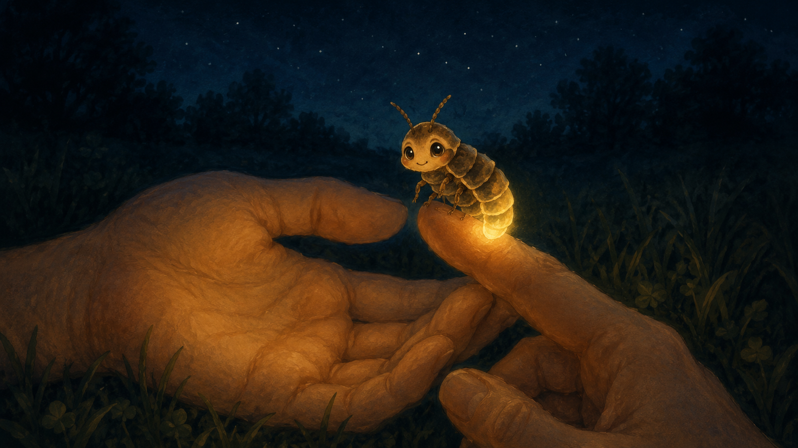
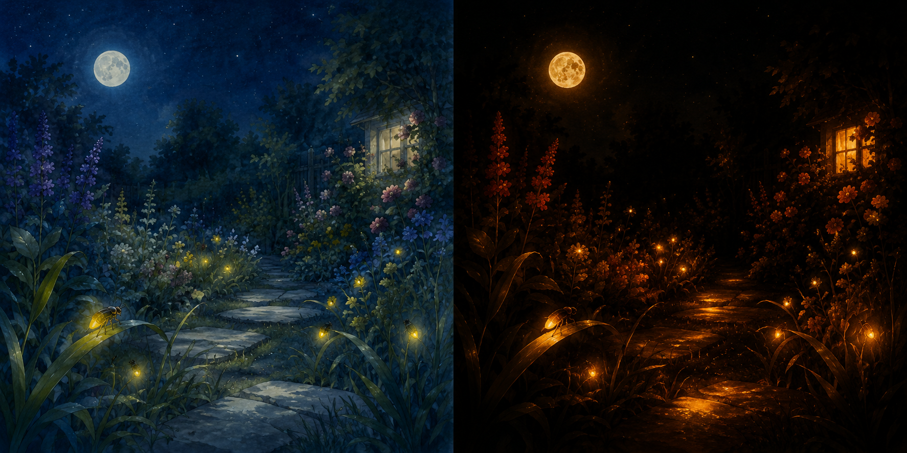
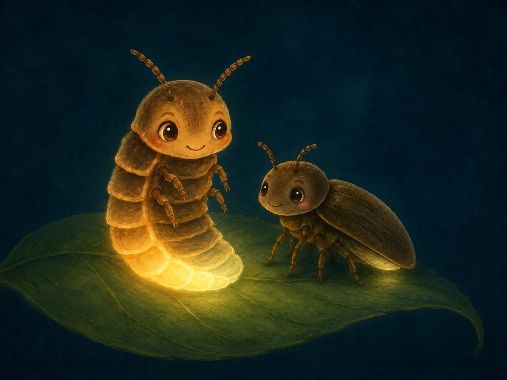
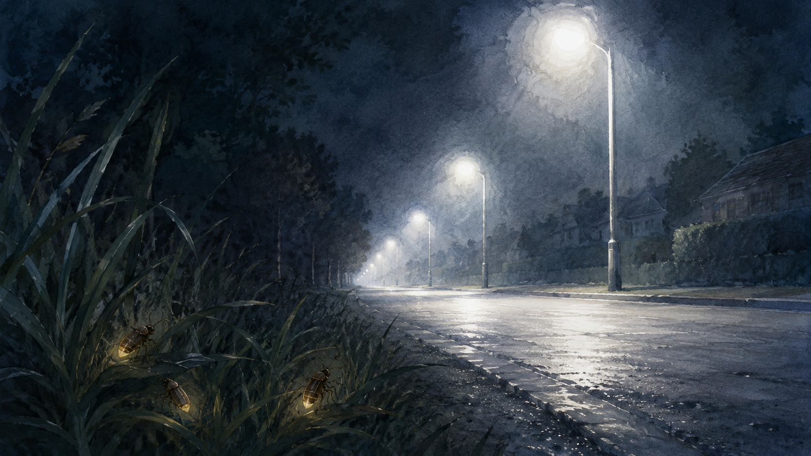
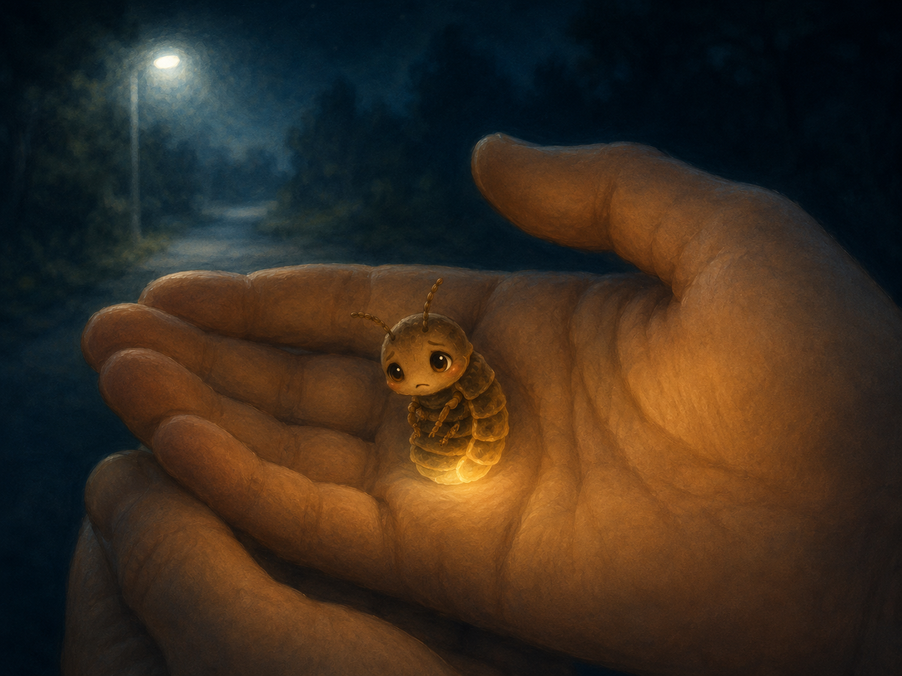
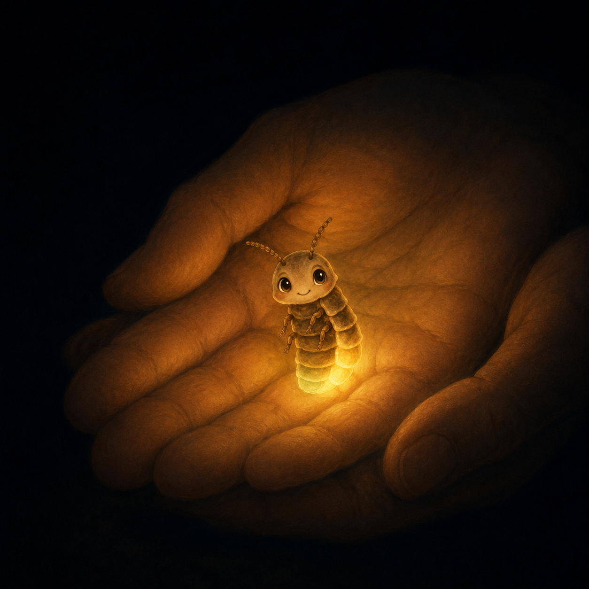
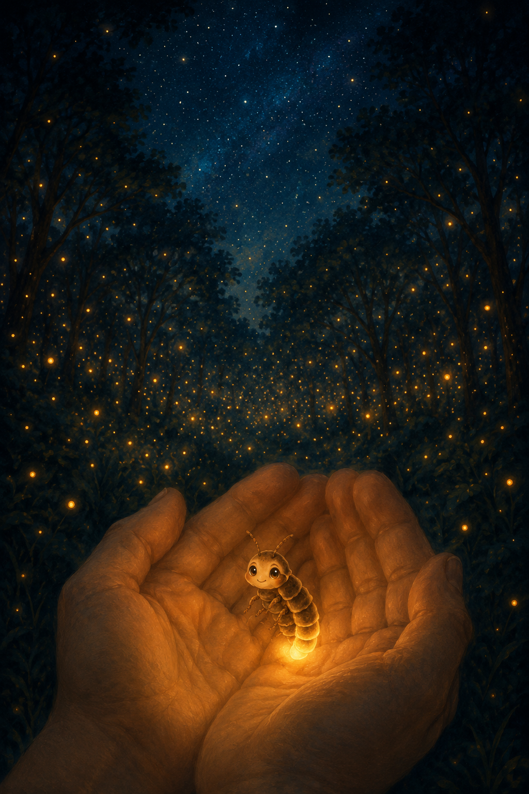

Miss Honey Couldn't Find Her Honey
Last night I sat on the grass in an unfamiliar park, watching the stars sparkle in the dark and marvelling at their untouchable beauty. I wished I could reach up and hold one.
I narrowed my eyes as a lone star seemed to drift closer, floating down until it settled gently on my hand.
Looking closely, I saw a shimmering firefly glowing the soft golden colour of honey. I named her Miss Honey for that warm light.
Did you know? How fireflies see colour
Fireflies do not see colours the way we do. With only one receptor for long-wavelength light, they are green-blue colourblind, tuned to spot the specific glow colour emitted by their own kind.

Soon I noticed that her name meant even more than her colour.
“Please help me,” she whispered. “I'm lost.” Her light began to tremble.
“Where are you trying to go?” I asked.
“Home,” said Honey. “I must find my honey, my mate. He's out there somewhere.” She crawled across my palm and pointed with her tiny head. “That way, I think.”
“Is it far? Shall I give you a lift in my car?” I asked softly.
“Oh no!” she whimpered. “I can't bear the glare of car headlights or streetlights. They keep me from finding my mate.”
Did you know? Common glow-worm lifespan and energy
More than 2,200 kinds of firefly live around the world, and Honey is a common glow-worm (Lampyris noctiluca). When they are young, glow-worms glow to warn predators they taste awful. Adult glow-worms live for under two weeks and rarely feed, so they run on a tight energy budget for survival, mating, and shining. Like a torch on fading batteries, glowing too long dims their light.
Question 1
How many kinds of night-time light can you name? Look around and see what is glowing nearby.
Honey explained that female glow-worms have no wings and cannot fly, so they switch on the green-yellow light on their abdomen to call passing males from the air. Once a female mates, she switches her light off.

Honey looked up at the streetlights and sighed. “Nights have grown far brighter in recent years,” she said. “There is so much artificial light that I can barely glow normally, especially under those white streetlamps.”
I had always felt grateful for streetlights guiding me home, yet in that moment they looked harsh, even cruel. “What kind of light would be easier for you?” I asked.
She closed her eyes. “I'm not sure,” she answered.
Did you know? Artificial light and glow-worm body clocks
Night skies have grown over 49% brighter in the past twenty years as lighting became cheaper and brighter.
Common glow-worms tell time by the darkness around them, much as children go to bed at nightfall and wake at dawn. When streetlights and headlights turn night into daytime, glow-worms shut off their signals hours too early.

Honey couldn't say which lamp hurt her most, so I looked up what scientists found.
Question 2
Which colours of light do you think trouble glow-worms least? Make a guess before reading on.
What scientists found: light colour and mate attraction
Researchers tested model glow-worms under white, yellow, red, blue, or no artificial light and caught over 600 males in total. Most males flew towards red, yellow, or unlit models, but far fewer approached under blue or white glare. When outdoor lighting cannot be avoided, warm red or yellow light leaves glow-worms a much better chance than white or blue.
See references ↓Honey glanced down at her body. “My glow is getting dimmer, can you see?” she said. “The longer we stay under bright lights, the harder it gets to keep shining.”
Question 3
What happens to a common glow-worm after sitting under a streetlight for a long time?
What scientists found: bright-light exposure and fading glow
Scientists divided 88 glowing females into three groups at streetlight brightness: no exposure, short exposure, and long exposure. Three days later, the proportion that stopped glowing climbed from 3% with no exposure to 15% after short exposure, and a shocking 90% after long exposure.
See references ↓
Watching her light fade made me feel sorry and guilty. “Does the light bother the boys too?” I asked.
“Yes, I don't know what's wrong with them,” said Honey. “I struggle to shine as bright as I can, yet they fly past without even a glance. Why? I haven't done anything wrong!” A tear rolled down her face. “I'm sorry.”
Question 4
If a female glow-worm shines for many nights instead of one, is that good news or bad news for finding a mate?
What scientists found: artificial light and mating success
Females stop glowing soon after mating, so extra nights spent lit mean extra nights alone. Across 51 females tracked in dark and lit sites, all 24 in the dark stopped glowing after just 1 night, including 8 moved out of bright areas. Females left under lights kept glowing for a median of 6 nights, and up to 15 nights, waiting for mates who could no longer spot them.
See references ↓“Don't cry, Miss Honey,” I said, trying to comfort her. “Your light is lovely. You will find your mate.”
Yet she only grew sadder. “You don't understand,” she said, turning towards the sky. “Even if I crawl far from the streetlights, I can't get away from them. They are like monsters. If only I had wings, I'd fly somewhere with no artificial light at all.”
What scientists found: distance from artificial light
Scientists placed a bright LED in the middle of a field, shielded one side, and set model glow-worms in both directions. At 10 metres on the lit side, traps drew only 5% as many males as in the dark: 1 male for every 20 in dark traps. Even 55 metres away, dark traps still drew roughly twice as many males. Moving down the road is not enough to escape the glare.
See references ↓I was shocked and speechless.
After a brief silence, she grew serious. “May I ask you a favour?”
“Me?” I felt surprised. “What is it?”
Honey climbed onto my fingertip and looked up at me. “Write about our talk so more children understand what happens to us. People have taken steps to cut light pollution, I know, but it's far from enough.”
“I promise I will,” I told her.
Honey leaned down and kissed the tip of my finger. “We have a deal.”
At that moment, the power went out across the park, and everything fell silent and dark.
Honey began to dance in my palm. “Look!” she cheered. “Look at my light, it's getting brighter!”
“It's beautiful,” I said.

I looked up again. Out from the deep woods, hundreds of fireflies came drifting towards us, filling the night with green and yellow glow. Surrounded by their lights, I felt as if I were flying in the galaxy. Perhaps Honey was a star sent down from that galaxy, come to tell us that we need to shelter our stars.
For a moment I could no longer tell which lights were fireflies and which were stars.
Before I walked home, Honey invited me back this Sunday. With luck, she will have found her mate by then. Would you like to join me? By now, you know what Honey dislikes.

Question 5
Can you remember the practical ways we can help Honey?
Answers
- 1.
- Artificial lights appear in many places: streetlights and car headlights, shop signs and billboards, grow lights in greenhouses, and security or decorative lights on our own houses.
- 2.
- Red and yellow lights trouble glow-worms less, because males can still spot the females. Bright white and blue lights cause the worst disruption.
- 3.
- The longer she stays under a bright light, the higher the chance her glow fades out.
- 4.
- Bad news. In the dark, females usually find a mate on the first night and switch off. Under bright lights, nobody sees them, forcing them to glow night after night until their energy runs out.
- 5.
- Choose warm red or yellow light over bright white, shorten lighting hours, and switch off lights you don't need.
Did your answers match? Don't worry if you can't remember every detail. All that matters is remembering to switch off a light you don't need when you pass by.
References
- Elgert, C. et al. (2021) ‘The duration of artificial light defines sexual signalling in the common glow-worm’, Behavioral Ecology and Sociobiology, 75(11). doi: 10.1007/s00265-021-03093-2.
- Kivelä, L. et al. (2023) ‘The color of artificial light affects mate attraction in the common glow-worm’, The Science of the Total Environment, 857, pp. 159451. doi: 10.1016/j.scitotenv.2022.159451.
- Owens, A. C. S. et al. (2022) ‘Behavioral responses of bioluminescent fireflies to artificial light at night’, Frontiers in Ecology and Evolution, 10. doi: 10.3389/fevo.2022.946640.
- Stewart, A. J. A., Perl, C. D. and Niven, J. E. (2020) ‘Artificial lighting impairs mate attraction in a nocturnal capital breeder’, Journal of Experimental Biology, 223(19). doi: 10.1242/jeb.229146.
- Van den Broeck, M. et al. (2021) ‘Blinded by the light: Artificial light lowers mate attraction success in female glow-worms (Lampyris noctiluca L.)’, Insects, 12(8), p. 734. doi: 10.3390/insects12080734.